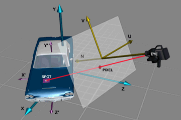

ShaderHandler
ShaderInterface
Shaders set the color and other appearance attributes of each visible spot on a
surface.
Background
A surface, sometimes called a material in other programs, is a
collection of attributes that define the appearance of a polygon. The same surface can be
applied to multiple objects, and different surfaces can be applied to different polygons
on the same object. Shaders are always associated with a surface and affect its appearance
during rendering by setting or modifying its attributes. More than one shader can be
associated with a surface, and the effects of one shader might in turn be modified by the
next shader in line. A shader can also fire rays into the scene that cause other shaders
to be evaluated.

For each pixel in the final image, the renderer finds the spot in the scene that the
camera sees at that pixel. If the spot is on an object, its appearance depends on the
suface assigned to the polygon it lies in. The renderer uses the surface settings to
calculate a color for the pixel, and if a shader is attached to the surface, its
evaluation function is called to either modify the surface settings or perform its own
color calculation.
The shader evaluation function is given detailed information about the surface
attributes and the geometry of the spot and about the context of the evaluation, and it
has access to several raytracing functions that can tell it even more about the scene.
Handler Activation Function
XCALL_( int ) MyShader( long version, GlobalFunc *global,
LWShaderHandler *local, void *serverData );
The local argument to a shader's activation function is an LWShaderHandler.
typedef struct st_LWShaderHandler {
LWInstanceFuncs *inst;
LWItemFuncs *item;
LWRenderFuncs *rend;
void (*evaluate) (LWInstance, LWShaderAccess *);
unsigned int (*flags) (LWInstance);
} LWShaderHandler;
The first three members of this structure are the standard handler
functions. In addition to these, a shader provides an evaluation function and a flags
function.
- evaluate( instance, access )
- This is where the shader does its work. At each time step in the animation, the
evaluation function is called for each pixel affected by the shader's surface. The access
argument, described below, contains information about the spot to be colored.
flags( instance )- Returns an int that tells the renderer which surface attributes the shader will modify
and whether it will call the raytracing functions. These flags are bitfields that should
be combined using bitwise-OR to create the return value. They correspond to members of the
shader access structure described below. For efficiency reasons, the renderer will ignore
changes to any surface attributes that weren't indicated by the bit flags returned from
this function and won't provide access to the raytracing functions unless the LWSHF_RAYTRACE
bit is set. The flags are
LWSHF_NORMAL
LWSHF_COLOR
LWSHF_LUMINOUS
LWSHF_DIFFUSE
LWSHF_SPECULAR
LWSHF_MIRROR
LWSHF_TRANSP
LWSHF_ETA
LWSHF_ROUGH
LWSHF_RAYTRACE
Interface Activation Function
XCALL_( int ) MyInterface( long version, GlobalFunc *global,
??? *???, void *serverData );
TBD.
Shader Access
The spot evaluation function is called for every visible spot on a surface with a
shader access structure describing the spot to be shaded. The access structure contains
some values which are read-only and some which are meant to be modified. The read-only
values describe the geometry of the pixel being shaded. The read-write values describe the
current attribute settings of the spot and should be modified in place to affect the final
look of the spot. Since shaders may be layered, these properties may be altered many more
times before final rendering. The access structure also contains special functions that
can be called only while rendering.
typedef struct st_LWShaderAccess {
int sx, sy;
double oPos[3], wPos[3];
double gNorm[3];
double spotSize;
double raySource[3];
double rayLength;
double cosine;
double oXfrm[9], wXfrm[9];
LWItemID objID;
int polNum;
double wNorm[3];
double color[3];
double luminous;
double diffuse;
double specular;
double mirror;
double transparency;
double eta;
double roughness;
LWIlluminateFunc *illuminate;
LWRayTraceFunc *rayTrace;
LWRayCastFunc *rayCast;
LWRayShadeFunc *rayShade;
int flags;
int bounces;
LWItemID sourceID;
double wNorm0[3];
double bumpHeight;
} LWShaderAccess;
Read-Only Parameters
These fields provide read-only information about the local geometry of the spot and the
context of the evaluation.
- sx, sy
- The pixel coordinates at which the spot is visible in the rendered image. This is
labeled "PIXEL" in the figure, but note that it won't necessarily be the spot's
projection onto the viewplane. When the viewing ray originates on a reflective surface,
for example, the pixel coordinates are usually for the source of the ray (the spot's
reflection). The pixel coordinate origin (0, 0) is in the upper left corner of the image.
- oPos
- Spot position in object (Modeler) coordinates (the (X', Y', Z') system in the figure).
- wPos
- Spot position in world coordinates (X, Y, Z). This is the position after transformation
and the effects of bones, displacement and morphing.
- gNorm
- Geometric normal in world coordinates. This is the raw polygonal normal at the spot,
unperturbed by smoothing or bump mapping.
- wNorm0
- The interpolated normal in world coordinates. This is the same as gNorm, but
after smoothing.
- spotSize
- Approximate spot diameter, useful for texture antialiasing. The diameter is only
approximate because spots in general aren't circular--on a surface viewed on edge, they're
long and thin.
- raySource
- Origin of the incoming viewing ray in world coordinates. Labeled "EYE" in the
figure, this is often the camera, but it can also, for example, be a point on a reflective
surface.
- rayLength
- The distance the viewing ray traveled in free space to reach this spot (ordinarily the
distance between raySource and wPos).
- cosine
- The cosine of the angle between the viewing ray and the raw surface normal (the dot
product of gNorm and the unit viewing ray vector (wPos - raySource)/rayLength).
This indicates how glancing the view is and gives a measure of how approximate the spot
size is.
- oXfrm
- Object to world transformation matrix. The nine values in this array form a 3 x 3 matrix
that describes the rotation and scaling of the object. This is useful primarily for
transforming direction vectors (bump gradients, for example) from object to world space.
- wXfrm
- World to object transformation matrix (the inverse of oXfrm).
- objID
- The object being shaded. A single shader instance can be shared between multiple
objects, so this may be different for each call to the shader's evaluation function. For
sample sphere rendering the ID will refer to an object not in the current scene.
- polNum
- An index identifying the polygon that contains the spot. It may represent other
sub-object information in non-mesh objects.
- flags
- Bit fields describing the nature of the call. The LWSAF_SHADOW bit tells you
when the evaluation function is being called during shadow computations, which you might
want to treat differently from "regular" shader evaluation.
- bounces
- The number of times the viewing ray has branched, or bounced, before reaching this spot.
This value can be used to limit recursion.
- sourceID
- The item ID of the source of the viewing ray.
Modifiable Parameters
These parameters are used by the renderer to compute the perceived color at the spot
and may be modified by the shader. Many of them correspond directly to surface parameters
in the user interface, although the values may be represented by different ranges. Unless
stated otherwise, the values of these fields nominally range from 0.0 to 1.0, and values
outside that range are also valid.
The shader's flags function must have returned the correct flags for the fields the
shader will modify, or changes to these fields will be ignored. To set the perceived color
directly, a shader can set all of the parameters to zero except for luminous,
which should be 1.0, and color, which should be the output color of the spot.
- wNorm
- Surface normal in world coordinates. If you modify this vector, you must renormalize it
(make its length equal to 1.0).
- bumpHeight
- The apparent height of the bump, expressed as
- color
- The RGB components of the base color of the spot.
- luminous
- Luminosity level.
- diffuse
- Diffuse reflection level.
- specular
- Specular reflection level.
- mirror
- Mirror reflection level.
- transparency
- Transparency level.
- eta
- Index of refraction. In the real world this ranges between 1.0 and about 3.5, depending
on the material, but values outside that range are also valid here.
- roughness
- Surface roughness, or the inverse of glossiness. This field corresponds to (the inverse
of) the exponent in the Phong specular highlight formula.
Rendering Functions
These functions are provided only in a rendering context, since they depend
on having full information about the scene. They will not be available in other contexts,
e.g. previewing.
- illuminate( lightID, position, direction, color )
- This function obtains the light ray (color and direction) hitting the given position
from the given light at the current time step. The return value is zero if the light does
not illuminate the given world coordinate position at all. The color includes effects from
shadows (if any), falloff, spotlight cones and transparent objects between the light and
the point.
lightID- The light, given by its LWItemID.
- position
- The world coordinates of the spot at which the illumination will be tested.
- direction
- Storage for the direction of the light ray computed by the function.
- color
- Storage for the color of the light ray.
rayTrace( position, direction, color )- Trace a ray from the given location in the given direction in world coordinates. The
return value is the length of the ray (or -1.0 if infinite) and the color coming from that
direction. The direction argument is the outgoing direction and must be normalized (a unit
vector).
position- The world coordinates of the source of the ray.
- direction
- A unit-length vector, the outgoing direction of the ray in world coordinates.
- color
- Storage for the color of the spot hit by the ray.
rayCast( position, direction )- This is a quicker version of the rayTrace function which only returns the distance to
the nearest surface (or -1.0). It performs neither shading nor recursive raytracing.
position- The world coordinates of the source of the ray.
- direction
- A unit-length vector, the outgoing direction of the ray in world coordinates.
rayShade( position, direction, shaderAccess )- This function traces a ray to the nearest surface and evaluates the basic surface
parameters and any shaders on that surface. The ShaderAccess structure passed (and owned)
by the client is filled in with the result and no more processing is done.
position- The source of the ray in world coordinates.
- direction
- A unit-length vector, the outgoing direction of the ray in world coordinates.
- shaderAccess
- A pointer to an empty ShaderAccess structure that will be filled in by the function.
|